Hundreds of near-identical fields, side by side. Split them at random and your test set is your training set — today is about evaluations that don’t fool you.
Deep Learning Applications in Environmental Big Data · Prof. Hyunglok Kim · GISTImage: center-pivot irrigation, Wadi As-Sirhan, Saudi Arabia — Landsat false color (NASA / USGS)
0:00 · Reading quiz
Quiz first — 5 minutes, closed book
3 questions on this week’s paper (Reichstein et al. 2019).
No artificial-intelligence tools, no notes.
Swap with your neighbor to grade.
Pass = 2 of 3.
Best 8 of 10 count (6% of grade).
Week 2 · 75 min
Today in five moves
1 · Backpropagation, the idea — the chain rule with real numbers, and the bill it creates (10 min)
2 · The optimizer recipe — AdamW + warmup and cosine, the recipe every foundation model uses (15 min)
3 · Leakage-safe evaluation — why random splits lie, and by how much (25 min · headline)
4 · Worked example — a reviewer-proof split for global soil moisture (10 min)
5 · Reading framing → journal club — Reichstein et al. 2019, set up in class, 30-min club after break (10 min + 30 after break)
Lab after break: CAMELS-US network + sweep + the random-versus-spatial split experiment · every full derivation still ships in this deck — see the Appendix after the lab slide
Part 1 · 10 min
Backpropagation, the idea
How one number — the loss — turns into a million precise nudges.
Part 1 · The loop
Training is a loop: guess → score → nudge
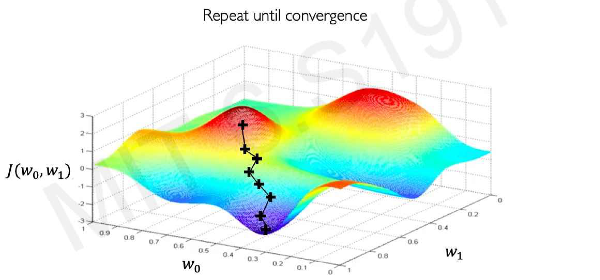
Downhill on the loss surface, one nudge at a time. Figure: MIT 6.S191, introtodeeplearning.com
θ “theta” — every weight in the model, gathered into one long list; training = choosing good values for θ.L — the loss: ONE number scoring how wrong the current predictions are (smaller = better).∂L/∂θ “partial L over partial theta” — the blame list: for each weight, how much L would move if that weight moved a hair.∇ “nabla” — the upside-down triangle means “the gradient of”: ∇L stacks all those slopes into one vector.θ ← θ − η∇L — η (“eta”) is the step size; “←” = overwrite the old θ; subtracting η∇L nudges every weight slightly downhill.in the figure — J(w₀, w₁) is MIT’s name for the loss (our L), drawn over just two weights w₀ and w₁ so it can be plotted; each ✚ is one trip around this loop.
The whole of deep learning fits in this loop — everything in Parts 1–2 is just making each arrow cheap and safe.
Part 1 · One wire
The chain rule with real numbers — the entire trick
x = 2, w = 3 → z = w·x = 6 · target y = 10 → L = (z−y)² = 16
how much does L care about z? ∂L/∂z = 2(z−y) = −8
how much does z move per unit of w? ∂z/∂w = x = 2
chain them: ∂L/∂w = (−8) × 2 = −16→ increase w
One step with η = 0.1: w ← 3 − 0.1·(−16) = 4.6 → z = 9.2, L drops 16 → 0.64.
Every gradient in every network is this: downstream slope × local slope, multiplied along the wire.
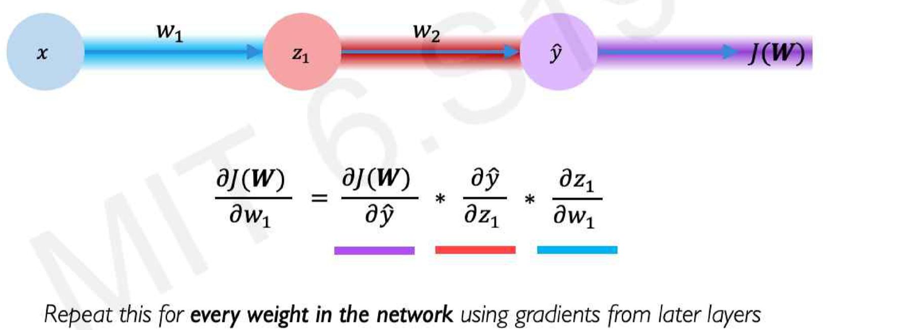
Same idea, one layer deeper — each colored band is one local slope in the product. Figure: MIT 6.S191
∂L/∂z — “if z moved a hair, how much would L move?” For L = (z−y)² that slope is 2(z−y).∂z/∂w — “if w moved a hair, how much would z move?” For z = w·x it is simply x.chain rule — slopes along a chain multiply: w moves z, z moves L, so ∂L/∂w = ∂L/∂z × ∂z/∂w.η “eta” — the learning rate: what fraction of the blame you apply as a correction (here 0.1).in the figure — J(W) is again the loss (our L); ŷ “y-hat” — the model’s prediction; z₁ — the intermediate value between the two weights w₁ and w₂; each colored underline is one arrow’s local slope in the product.
A network is many wires — backward, gradients add across paths
One hidden unit feeds every unit in the next layer — so its blame is the sum over all the paths its influence takes to the loss.
Backprop repeats two moves, layer by layer, all the way down:
pass the blame backward through the weights · turn blame into a weight-update using the input you saved on the way forward.
That “saved input” is why training needs so much memory — two slides ahead.
h — the output of one hidden unit; z₁…z₄ — the four downstream units it feeds.Σ “sum” — h’s total blame adds one contribution per path its influence takes to the loss.saved input — the tensor a layer received in the forward pass; backward reuses it to turn blame into that layer’s weight updates.
Part 1 · A real circuit
Read one real circuit: forward in green, blame in red
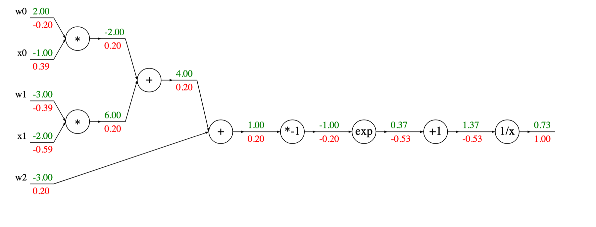
A 2-input sigmoid neuron as a circuit of tiny gates. Green: values flowing forward. Red: blame flowing backward — each gate multiplies the incoming red number by its own local slope. Figure: Stanford CS231n (cs231n.github.io)
green — the value each wire carries in the forward pass.red — that wire’s blame: how much the final output moves per unit change here; each gate multiplies the red number it receives by its own local slope, nothing more.the gates — ×, +, exp, 1/x … each knows its own one-line derivative; the circuit computes the sigmoid σ(x) = 1/(1+e⁻ˣ) of w₀x₀ + w₁x₁ + w₂.
PyTorch’s loss.backward() is exactly this picture: record the circuit on the way forward, walk it in reverse multiplying local slopes.
Part 1 · The bill
What it costs: two extra forwards — and a memory debt
Compute: backward ≈ 2 × forward, so a whole training step ≈ 3 × forward — at any parameter count. Gradients of 10⁹ weights cost two extra passes, not 10⁹ evaluations (finite differences would).
Memory: every layer must save its input for the backward pass — activation memory ∝ depth × batch × sequence × width, and it dwarfs the weights. Activations set your batch-size ceiling.
Gradient checkpointing: save only some activations, recompute the rest — ≈ +33% compute for 5–10× less memory. When you run out of GPU memory fine-tuning in Week 12: checkpointing / batch / precision — not a smaller model.
activations — the tensors each layer outputs (and must keep) during the forward pass.∝ “proportional to” — grows in step with.finite differences — the naive alternative: wiggle one weight, rerun the whole network, read off the change; repeat per weight.
AdamW · warmup + cosine · clipping — one recipe, every foundation model. By minute 30 you can read any paper’s optimization paragraph in thirty seconds.
Part 2 · The terrain
Why a recipe at all: this is the terrain
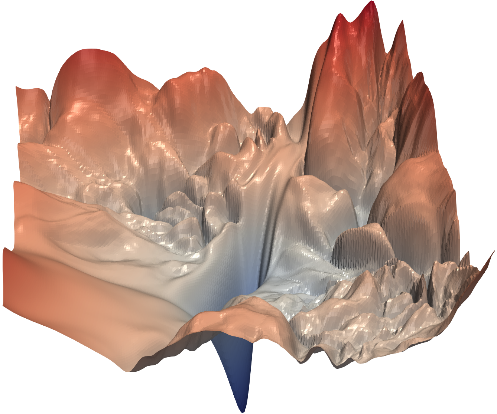
ResNet-56, no skip connections
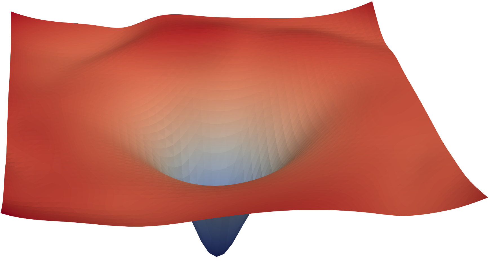
same network, with skip connections
Real measured loss surfaces — Li et al. 2018, arXiv:1712.09913 · architecture reshapes the terrain (a Week 4 story); today: how to walk it safely either way
Part 2 · Ingredient 1
Gradient descent: feel the slope, step downhill
θ ← θ − η ∇L— the linear approximation says downhill is this way; take a small step η
That’s the whole theory: L(θ + Δ) ≈ L(θ) + ∇LᵀΔ, and Δ = −η∇L makes the right side smaller. (That one line is the entire derivation.)
Minibatches: the gradient of B random samples is an unbiased but noisy compass — noise shrinks like √B while cost grows like B, so moderate batches + many steps win.
Everything else in the recipe is a repair to this one line — for noise, for curvature, for fragile starts.
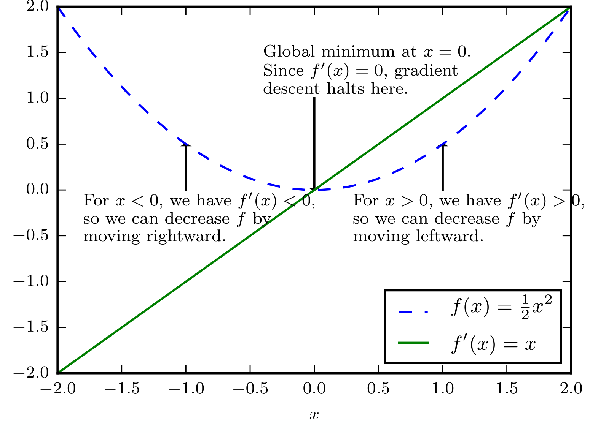
The derivative points uphill; walk the other way. Figure: I. Goodfellow, Deep Learning lecture slides
∇L “grad L” — every weight’s slope stacked into one vector; it points uphill, so −∇L is downhill.η “eta” — the learning rate: how far you step along −∇L each time.L(θ+Δ) ≈ L(θ) + ∇LᵀΔ — “near θ, the loss looks like a tilted plane”; ∇LᵀΔ is slope × displacement (a dot product).unbiased — right on average: the B-sample minibatch gradient equals the full gradient in expectation; B = batch size.in the figure — f(x) = ½x² (dashed) is a toy stand-in for the loss; the green line f′(x) is its derivative: where f′ < 0 step right, where f′ > 0 step left, and at f′ = 0 (the minimum) descent halts.
Too small: crawls — you pay compute for no progress.
Too large: plateaus above the minimum, bouncing across the valley.
Way too large: diverges — the loss rises.
No single constant is right for the whole run — early training wants caution, the end wants stillness. That’s why schedules exist — Ingredient 5, a few slides ahead.
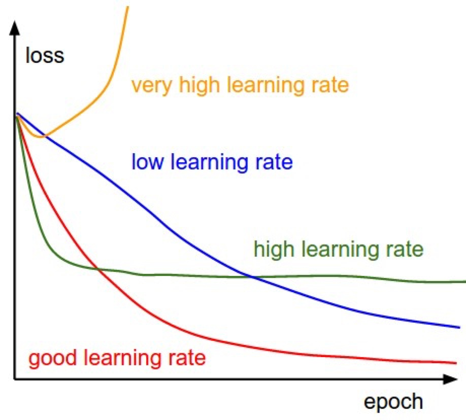
The four fates of a learning rate. Figure: Stanford CS231n
η — the learning rate from the previous slide: the size of each downhill step. Each curve in the cartoon is one choice of η, watched over a whole training run (loss vs epoch; an epoch = one pass over the training data).
Part 2 · Ingredient 3
Momentum: a heavy ball remembers its direction
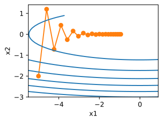
η = 0.4 — zig-zags, crawlsη = 0.6 — explodes
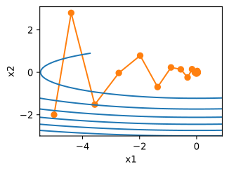
η = 0.6 + momentum — converges
m ← β·m + (1−β)·g · step along m — an average of recent gradients: window ≈ 1/(1−β) steps (β=0.9 → last ~10 · β=0.95 → ~20 · β=0.999 → ~1000)
g — this step’s (noisy) minibatch gradient.m — the “velocity”: a running average of recent g’s; the update follows m, not the raw g.β “beta” — the memory knob (0–1): how much of the old average survives each step; effective window ≈ 1/(1−β) recent gradients.in the figures — x₁, x₂: the two weights of a toy loss; blue rings: equal-loss contours, a map view of the valley (steep across, shallow along); orange dots: successive steps of the walk.
Figures: Dive into Deep Learning, d2l.ai (CC BY-SA 4.0) · same function, same steps — only memory added · unroll of the average: Appendix
Part 2 · See them race
Six optimizers, same start — watch them race
on a curved valleyat a saddle point — SGD stalls
SGD — plain gradient descent, no memory.Momentum / NAG — the heavy ball (NAG peeks one step ahead before committing).Adagrad / Adadelta / RMSprop — per-parameter step sizes built from each weight’s own gradient history: the family Adam merges with momentum.in the animations — the rings are equal-loss contours and the ★ is the minimum; the right-hand surface is a saddle point: flat at the center, downhill only to the sides — the gradient there is ≈ 0, so memory-less SGD stalls.
Animations: A. Radford, via Stanford CS231n · momentum overshoots but arrives · adaptive methods pick per-coordinate step sizes — that idea is Adam, next slide
Part 2 · Ingredient 4
Adam: every parameter gets its own step size
m = average of g (the direction, denoised — momentum)
v = average of g² (the typical squared size, per parameter) step ∝ − η · m / (√v + ε)— signal ÷ typical magnitude
Thought experiment — a constant gradient g: then m → g, v → g², and the step is η·g/|g| = η·sign(g). The raw scale cancels entirely.
So a parameter whose gradients are 10⁻⁶ and one whose are 10³ both move ≈ η per step — one learning rate serves layers with wildly different curvature. That is why Adam took over.
Foundation-model settings: β₁ = 0.9, β₂ = 0.95 (not the old 0.999 — a ~20-step variance memory reacts faster to loss spikes), ε = 10⁻⁸.
m — the averaged direction (momentum); v — the average of g²: each weight’s typical squared gradient.√v — each weight’s typical gradient size; dividing by it puts every weight on the same ≈ η step.β₁, β₂ — the memory knobs of the two averages; ε “epsilon” — a tiny constant so nothing divides by zero.sign(g) — just the direction, +1 or −1: what the ratio collapses to when the gradient is steady.
Warmup protects the noisy start; cosine anneals the finish
Warmup: for the first ~tens of steps, Adam’s “typical size” v is an average of almost nothing — dividing by it produces huge steps in random directions. Ramping η from 0 keeps those steps harmless. Skip it and step 50 diverges.
Cosine: leave ηmax gently, land quietly near zero — and T is fixed in advance: the schedule is a commitment to a compute budget, very foundation-model culture. ηt = ηmin + ½·(ηmax−ηmin)·(1 + cos(π·t/T)) — check: t = 0 → ηmax, t = T → ηmin.
ηt — the learning rate at step t: no longer one constant but a planned schedule.ηmax — the peak rate, reached when warmup ends; T — the total number of steps, fixed before training starts.cos(π·t/T) — sweeps smoothly from 1 to −1 as t runs 0 → T; plugged into the formula it traces the gentle descent in the figure.
shrink weights a little every step: θ ← (1 − ηλ)·θ − η·(data gradient) AdamW applies the shrink outside the m/√v ratio — decay stays uniform for every weight
Fold the decay into the gradient instead (“Adam + ℓ₂”) and it gets divided by √v — the busiest weights, often the overfitting ones, are barely decayed at all. The regularizer silently varies per parameter.
The classic silent bug: PyTorch Adam(weight_decay=…) is the broken version; AdamW(weight_decay=…) is this slide. Same argument name, different mathematics.
Typical foundation-model value: λ = 0.05–0.1 (with η ~ 10⁻³–10⁻⁴).
λ “lambda” — the weight-decay strength: each step multiplies every weight by (1 − ηλ), a slight shrink toward zero that fights overfitting.ℓ₂ penalty — the older route to the same idea: add (λ/2)·‖θ‖² to the loss, where ‖θ‖ is the length of the weight vector.m/√v — Adam’s adaptive ratio from two slides back; “outside the ratio” = apply the shrink separately, after it.
Two safety nets: clip the spikes, stop at the turn
g ← g · min(1, c/‖g‖) — same direction, magnitude capped at c
Rare batches (a freak storm, a corrupted file) give ‖g‖ 10–100× typical; one unclipped step can undo hours. GraphCast clips at c = 32; LLM recipes use c = 1 — presence matters, value doesn’t much.
Monitor the clipped fraction in Weights & Biases: >~5% of steps clipping = η too high or a data problem.
Augmentation is regularization too — but physical fields have preferred directions: never flip a wind field north–south; Coriolis is not flip-invariant.
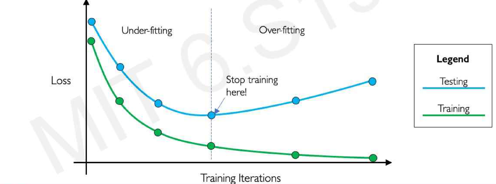
Early stopping: watch validation, stop at the turn, restore the best checkpoint — never the last. Figure: MIT 6.S191
‖g‖ — the overall length (norm) of the gradient vector; c — the ceiling: if ‖g‖ > c, rescale g to length exactly c, direction untouched.validation set — held-out data used only to decide when to stop; the gap between the two curves is overfitting happening live.
This exact recipe trains every foundation model in this course
Model
Optimizer
Schedule
Decay / clip
GraphCast (Lam et al. 2023)
AdamW, β₂ = 0.95
linear warmup ~10³ steps → cosine
λ = 0.1 · clip c = 32
Masked autoencoder (He et al. 2022)
AdamW, β₂ = 0.95
warmup 40 epochs → cosine
λ = 0.05
Prithvi (Jakubik et al. 2023)
AdamW
warmup → cosine
decoupled decay
When you read a foundation-model paper from now on, the optimization section should take you thirty seconds. The interesting choices are elsewhere: data, objective, and evaluation.
β₂ — Adam’s variance memory (0.95 ≈ last 20 steps) · λ — weight-decay strength · c — gradient-clip ceiling · warmup → cosine — the schedule from three slides back.
The geoscience failure mode: your test set is not new data — it's your training set, shifted 5 km or 1 day.
Part 3 · 25 min
Environmental samples are not independent — nearby pixels share their cause
Tobler’s law, quantified: soil moisture, biomass, and temperature have spatial correlation ranges of 10–1000 km, set by rainfall, terrain, and climate zones.
Every machine-learning split assumes test points are independent, identically distributed draws. A test pixel 5 km from a training pixel is, statistically, the same draw.
The variogram range — the distance where correlation dies — is the scale your split must respect (measured a few slides ahead).
The model is not cheating; the evaluation is: memorized geography scores as skill.
i.i.d. — “independent, identically distributed”: every sample brings new information, drawn from the same underlying distribution — the assumption leakage breaks.correlation range — the distance beyond which two locations stop moving together.
Time leaks the same way: today is mostly yesterday
Daily surface soil moisture: correlation between one day and the next ≈ 0.9–0.95; drydowns persist for days to weeks. Streamflow and land-surface temperature behave the same way.
Random split over days: a test day sandwiched between two training days is scored on interpolating memory, not modeling physics.
Seasonality is a second leak channel — the same phase of the annual cycle recurs in training even when the exact day is held out.
Consequence: temporal splits must be contiguous blocks (whole years), with a gap at the seam.
autocorrelation — the correlation of a day with the day before it (0.95 ≈ nearly a copy).persistence — the zero-skill “model” that predicts tomorrow = today; leaky splits reward exactly this.gap at the seam — drop the days between train and test that are close enough to remember the training side.
Part 3 · The damage
Random splits lie — and the lie is large
Ploton et al. 2020 — tropical forest biomass from satellite features. Same model, same data; only the split changed.
Optimism gap ≔ score(random split) − score(blocked split). Report it; don’t hide it.
The pattern replicates across species distribution, air quality, hydrology (basin models collapse on ungauged basins). A high random-split score is a claim about interpolation near your stations — nothing more.
R² — explained variance: 1 = perfect prediction, 0 = no better than always guessing the mean.CV — cross-validation: score the model on folds it never trained on; “random” vs “spatial” is just how those folds are cut.
γ(d) = ½·E[ (Z(s) − Z(s+d))² ] — half the mean squared difference between points a distance d apart
Close points agree → γ small; distant points are unrelated → γ flattens at the sill (the field’s total variance).
Range = the distance where the curve reaches the sill — beyond it, points are effectively independent.
The range is the number your split needs: blocks smaller than the range still leak.
Estimate it from the target itself, or better, from your model’s residuals.
Z(s) — the field’s value (say, soil moisture) at location s; Z(s+d) — the value at a point d away.E[…] — the average over many such pairs.γ(d) read aloud: “take all pairs d apart, square their disagreement, average it, halve it.”
Ten years of daily observations at one station: n = 3650, ρ ≈ 0.95 → ≈ 94 independent samples. A decade of data carries about three months of information.
Error bars computed with n are ~6× too tight — “significant” model improvements evaporate under blocked resampling.
Two-line derivation (the same geometric series as Adam’s bias correction): Appendix. Blocked cross-validation is the honest approximation — folds separated at the correlation scale behave like ≈ neff independent draws.
ρ “rho” — the correlation between neighboring samples, in time or in space (0 = unrelated, 1 = identical).neff — how many truly independent samples your n correlated ones are worth; honest error bars use neff, not n.
Hold out contiguous years — never shuffled days, never shuffled months.
Leave a gap at the seam ≥ the system’s memory: days for weather, weeks for soil moisture, months for groundwater.
Nonstationarity is a feature of the test: held-out years should contain unseen extremes (e.g., a drought year the model never trained on).
Normalization statistics from training years only — computing the climatology over all years is the classic silent leak.
climatology — the long-run average for that place and day of year.normalization statistics — the mean/std you scale inputs with; fit them on all years and test-year information seeps into training.nonstationarity — the test years’ climate differs from the training years’ — that is the point of the test, not a flaw.
Part 3 · The standard
WeatherBench2: year separation as the professional standard
Common ERA5 ground truth, fixed metrics (root-mean-square error and anomaly correlation on standard fields), strict train/validation/test year separation — every model on the leaderboard obeys it.
GraphCast, Pangu-Weather, NeuralGCM, and the European operational forecast are all scored on the same held-out year: that is why the comparison is believable.
ERA5 — the standard reconstruction of past weather (a “reanalysis”), used here as ground truth.RMSE — root-mean-square error; anomaly correlation — correlate forecast vs truth after subtracting climatology, so you score the weather, not the season.
The researcher who measured the damage — 25 minutes, worth it
Hanna Meyer leads the group whose papers (with Pebesma and colleagues) quantified how badly random cross-validation overstates global map accuracy.
This plenary is the argument of today’s Part 3 from the source: spatial autocorrelation, why random cross-validation fails, and what spatial validation and the “area of applicability” look like in practice.
Optional but recommended before your capstone evaluation design — you will cite this line of work in your final report.
The leakage checklist you will run on every project
1 · Does the split match the deployment claim (interpolation vs new region vs new year)?
2 · Are spatial blocks ≥ the autocorrelation range, with whole blocks per fold?
3 · Are temporal folds contiguous, with a gap ≥ system memory at the seam?
4 · Are all preprocessing statistics (normalization, climatology, feature selection) computed on training folds only?
5 · Is the optimism gap (random vs blocked) measured and reported?
This checklist is the rubric for the lab post-mortem and for project evaluations in Weeks 14–16.
Part 4 · 10 min
Worked example: a reviewer-proof split for global soil moisture
Part 4 · 10 min
The target: what the satellite actually gives us
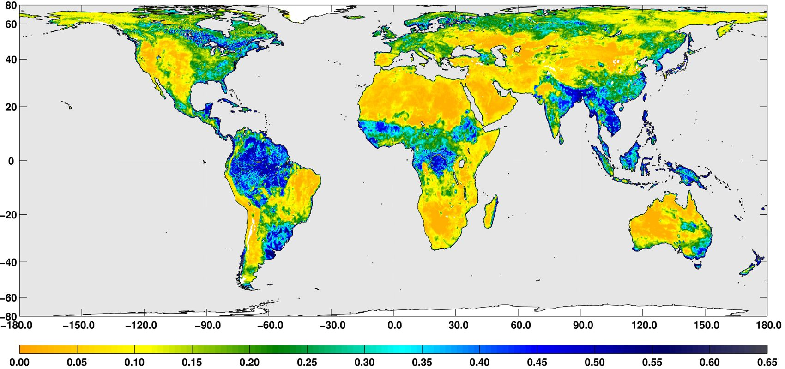
Three days of surface soil moisture from NASA’s Soil Moisture Active Passive satellite (August 2015, m³/m³). Wet monsoon belts, dry subtropics — and every pixel correlated with its neighbors. Image: NASA/JPL-Caltech/GSFC.
The task: learn this map from precipitation, temperature, vegetation, soil, and terrain — and prove the skill is real.
Part 4 · 10 min
The setup — and three ways the model can cheat
Task: daily surface soil moisture from precipitation, land-surface temperature, vegetation index, soil texture, terrain. Labels: ~2,800 stations of the International Soil Moisture Network, heavily clustered in the United States and Europe.
Leak 1 · space: many station pairs sit <10 km apart — well inside the correlation range.
Leak 2 · time: day-to-day autocorrelation ≈ 0.95 — any shuffled-day split is persistence in disguise.
Leak 3 · instrument: each network (SCAN, USCRN, SNOTEL, …) has its own sensors and calibration — network-specific bias is learnable and looks like skill.
A random split leaves all three open. A competent reviewer rejects in one paragraph.
The reviewer-proof protocol is the intersection, not the union
Primary score: held-out regions × held-out years simultaneously — unseen place in an unseen year.
Secondary: network-holdout to bound the instrument-bias contribution.
All tuning (sweeps, early stopping, checkpoint choice) inside training folds; the test partition is touched once.
Report a per-region table, not one global mean — the model’s failures in data-sparse regions are the scientific result.
This is discussion question 2 in today’s journal club — argue it with today’s vocabulary: range, block, gap, optimism gap.
Part 5 · 10 min
Reading framing
Reichstein et al. 2019 — where has deep learning for Earth system science delivered since, and where hasn’t it?
Part 5 · 10 min
The 2019 agenda we are grading seven years later
Reichstein’s five challenges for deep learning in Earth system science: interpretability · physical consistency · complex, uncertain data · limited labels · computational demand.
Their bet: the future is hybrid physics + machine learning — process models and learning fused, not learning alone.
Written before transformers reached the Earth sciences: no foundation models, no GraphCast, no self-supervised pretraining at scale.
Tonight’s question is an audit: which challenges did scale solve, which did it dodge, and did the hybrid bet pay off?
Which of Reichstein’s five challenges have foundation models since addressed, and which have they dodged?
Design a split for a global soil-moisture model that a reviewer couldn’t reject — what do you hold out?
Is “hybrid physics + machine learning” (their vision) winning in 2026, given NeuralGCM versus pure-learning GraphCast?
Groups of 4–5, working from your published entrance tickets (Journal Club tab on the course site) · instructor moderates this week (lead-pair rotation starts Week 3) · these three questions are the agenda.
Instructor-moderated this week (rotation starts Week 3) · opens with one reproduced figure · entrance tickets due 24 h before class
Lab briefing · after journal club
Today's lab: measure the optimism gap yourself
Task. Predict runoff ratio and mean annual streamflow from catchment attributes; your agent builds a small neural network + a gradient-boosting baseline. Data.CAMELS-US · ~671 basins · tabular
Sweep. Weights & Biases sweep over learning rate, depth, dropout — then re-evaluate the winner with spatial-block cross-validation (holdout by hydrologic region) and quantify the optimism gap versus the random split.
Deliverable.notes/week02.md: sweep parallel-coordinates plot + a “random split vs spatial split” table + a one-paragraph leakage post-mortem.
Start from the ready-made notebook: Week 2 page → “Lab 02 notebook — open in Colab” → run top to bottom. Data loads itself; nothing to download or clone.
Weights & Biases logging is mandatory from today — every run, every week, no exceptions.
Verify yourself: normalization statistics computed inside training folds only (checklist item 4) — find the scaler in the notebook and check where it is fit.
Appendix · self-study
The full derivations
Every result quoted today, derived step by step — backprop in matrices, the Adam bias correction, AdamW, and the effective-sample-size formula. Reference material; not covered live.
Appendix · Backprop 1 of 4
The network we will differentiate
input x ∈ ℝd₀
layer 1 z₁ = W₁x + b₁, W₁ ∈ ℝd₁×d₀ → h = σ(z₁) (σ applied to each entry)
layer 2 z₂ = W₂h + b₂, W₂ ∈ ℝd₂×d₁
loss L = ½‖z₂ − y‖² = ½ Σi (z₂i − yi)² (one scalar)
Goal: ∂L/∂W₂, ∂L/∂b₂, ∂L/∂W₁, ∂L/∂b₁ — the gradient of one scalar with respect to every parameter.
Everything that follows is the chain rule applied three times, keeping careful track of shapes.
ℝd — a list of d real numbers; W ∈ ℝd₁×d₀ — a matrix with d₁ rows and d₀ columns.σ — the activation function, applied entry by entry; σ′ — its slope.ᵀ — transpose (flip rows ↔ columns); ½‖·‖² — half the sum of squared entries.
Output layer: one entry at a time, then in matrix form
∂L/∂z₂i = z₂i − yi ⟹ g₂ ≔ ∂L/∂z₂ = z₂ − y ∈ ℝd₂
z₂i = Σj W₂[i,j]·hj + b₂i ⟹ ∂z₂i/∂W₂[i,j] = hj(and no other row of W₂ touches z₂i)
chain rule: ∂L/∂W₂[i,j] = g₂i · hj ⟹ ∂L/∂W₂ = g₂ hᵀ(outer product, d₂×d₁) · ∂L/∂b₂ = g₂
Each weight W₂[i,j] influences the loss through exactly one number, z₂i — so its gradient is one product: (how much L cares about z₂i) × (how much z₂i moves per unit of W₂[i,j]).
Note what the formula needs: g₂, and h — the layer’s input, saved from the forward pass. This is the saved-activation memory bill from the lecture.
≔ — “defined as”.g₂hᵀ (outer product) — a column times a row fills a whole matrix; its (i,j) entry is g₂i·hj, exactly the picture on the right.
Appendix · Backprop 3 of 4
Backward through the hidden layer — sum over every path
The Σi is the multivariable chain rule: hj reaches the loss through d₂ separate paths, and their contributions add — the fan-out picture from the lecture, now in symbols.
The recursion is visible — every layer repeats two moves: pass back Wᵀg · turn gradient into weights with (g)(stored input)ᵀ.
⊙ — multiply entry by entry (Hadamard product).W₂ᵀg₂ — the transpose routes each output’s blame back through the same weights to the inputs that fed it.
Appendix · Backprop 4 of 4
The general rule: vector–Jacobian products, right to left
for any map f: ℝⁿ → ℝᵐ, the Jacobian is J[i,j] = ∂fi/∂xj ∈ ℝm×n
chain over the whole network: ∂L/∂x = J₁ᵀ J₂ᵀ ⋯ Jkᵀ · ∇outL
computed right to left, each step is ḡ ← Jᵀḡ — a vector–Jacobian product, never matrix × matrix
Right to left works because L is a scalar: the running quantity ḡ stays a vector the whole way down.
The Jacobian of z = Wh with respect to W has shape m×(m·n) — for one transformer layer that is ~10⁸ entries. You never build it: the product Jᵀḡ collapses to the outer product ḡhᵀ from step 2.
Automatic differentiation = the forward pass records the graph and saves each operand; the backward pass replays it in reverse, one vector–Jacobian product per node. That is the whole of PyTorch’s loss.backward().
J (Jacobian) — the matrix of all slopes of a vector-valued function: J[i,j] = ∂fi/∂xj.ḡ “g-bar” — the running gradient carried backward; ḡ ← Jᵀḡ — one matrix–vector product per layer, never matrix × matrix.
The forward pass buys the backward pass by saving activations
Look back at Backprop 2–3: ∂L/∂W₂ needed h, ∂L/∂W₁ needed x, σ′ needed z₁ — every dashed box is one of those saved tensors. Chen et al. 2016 (checkpointing)
Appendix · Optimizers 1 of 3
Momentum is an exponential moving average — unroll it once
definition: mt = β·mt−1 + (1−β)·gt, m₀ = 0
unroll: mt = (1−β)·( gt + β·gt−1 + β²·gt−2 + ⋯ + βt−1·g₁ )
⟹ a weighted average of past gradients, weights decaying by β per step — effective window ≈ 1/(1−β)
β = 0.9 → averages roughly the last 10 gradients; β = 0.95 → last 20; β = 0.999 → last 1000.
Averaging cancels minibatch noise in directions that flip sign and accumulates speed in directions that persist — a low-pass filter on the gradient signal.
Keep the unrolled line in view — the bias-correction derivation on the next slide reads directly off it.
unroll — substitute the definition into itself until the pattern shows.βᵏ — β multiplied k times: the weight on a gradient k steps old; the weights fade geometrically.
Bias correction: why m̂ divides by (1 − β₁ᵗ), exactly
take expectations of the unrolled average, assuming E[gk] = μ:
E[mt] = (1−β)·(1 + β + β² + ⋯ + βt−1)·μ = (1−β)·(1−βᵗ)/(1−β)·μ = (1−βᵗ)·μ
⟹ m̂t ≔ mt/(1−βᵗ) has E[m̂t] = μ (same argument gives v̂t = vt/(1−β₂ᵗ))
The accent step is the finite geometric series Σk=0t−1 βᵏ = (1−βᵗ)/(1−β) — the only identity in the whole derivation.
Sanity check at t = 1: m₁ = (1−β)g₁ and 1−β¹ = 1−β, so m̂₁ = g₁ exactly — the correction undoes the zero initialization completely on step one.
It matters precisely when training is most fragile: for t ≪ 1/(1−β₂), uncorrected v is far too small → the step η·m/√v would be far too big. βᵗ falls to e⁻¹ by t = 1/(1−β) and the correction fades over a few multiples of the window — the early VARIANCE of v̂ remains, which is why warmup exists anyway.
E[·] — the average over minibatch randomness; μ “mu” — the true mean gradient.1 − βᵗ — the fraction of total weight the average has accumulated after t steps; dividing by it exactly undoes the zero start.
The same three lines, with runnable code: Dive into Deep Learning §12.10.1 · cosine formula with endpoint check: ηt = ηmin + ½(ηmax−ηmin)(1+cos(π·t/T)) — t=0 → ηmax, t=T → ηmin
Appendix · Optimizers 3 of 3
ℓ₂ penalty vs weight decay: identical in SGD, broken in Adam
penalized loss: L̃(θ) = L(θ) + (λ/2)·‖θ‖² ⟹ ∇L̃ = g + λθ
gradient-descent step: θ ← θ − η(g + λθ) = (1 − ηλ)·θ − ηg
⟹ “add λθ to the gradient” and “shrink weights by (1−ηλ) each step” are the same rule
…but in Adam the λθ term rides through the adaptive ratio: step ∝ m̂(g + λθ) / √v̂(g + λθ)
a parameter with a large gradient history (large v̂) has its decay term divided by √v̂ → barely decayed —
often exactly the weights that are overfitting. The equivalence is broken; AdamW restores it by applying −ηtλθ outside the ratio.
How much does correlation cost? Variance of a correlated mean
n observations, each Var = σ², neighbors correlated: Corr(xi, xi+k) = ρᵏ (first-order autoregressive form)
Var(x̄) = (1/n²)·ΣiΣj Cov(xi,xj) = (σ²/n²)·[ n + 2·Σk=1n−1 (n−k)·ρᵏ ] — n diagonal terms, and for each lag k there are (n−k) pairs, each counted twice
If ρ = 0 this collapses to the textbook σ²/n. Every ρ > 0 term adds variance the independent formula doesn’t see.
The double sum is just bookkeeping: count how many pairs sit at each lag, weight by their covariance σ²ρᵏ.
x̄ “x-bar” — the sample mean; Var(x̄) — its spread over hypothetical repeats of the whole dataset.Cov(xi,xj) — how two samples co-move; here σ²ρ|i−j|: correlation fades by a factor ρ per step of separation.
Ten years of daily observations at one station: n = 3650, ρ ≈ 0.95 → ≈ 94 independent samples — the punchline number quoted in the lecture.
Error bars computed with n are ~√39 ≈ 6× too tight — “significant” model improvements evaporate under blocked resampling.
Blocked cross-validation is the honest approximation: folds separated at the correlation scale behave like independent draws of size ≈ neff.
Σk ρᵏ = ρ/(1−ρ) — the geometric series; the same identity that powered Adam’s bias correction.≕ — “which defines”: we name neff by matching the independent-sample formula σ²/neff.